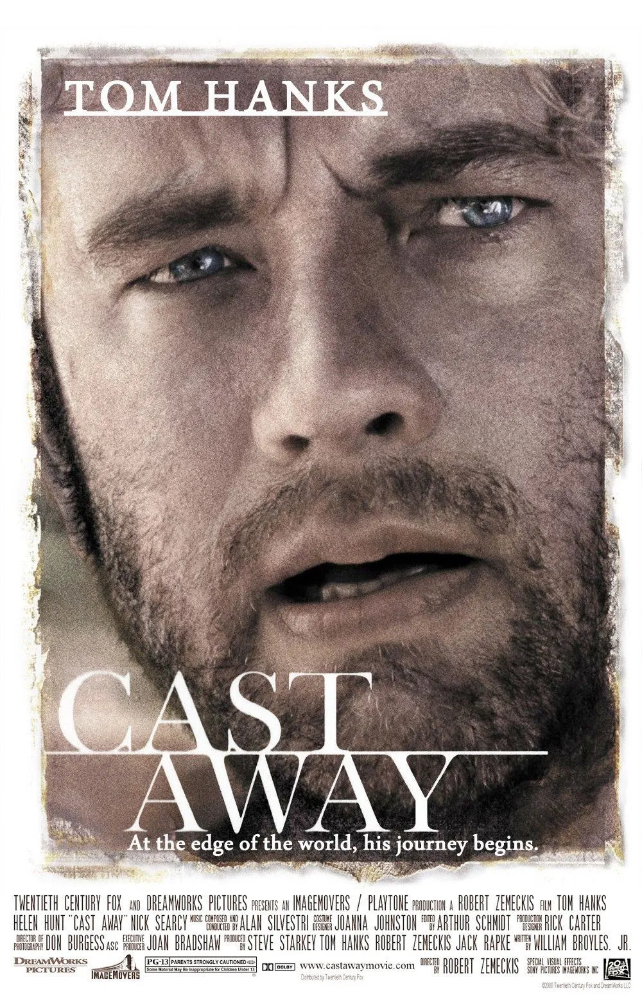
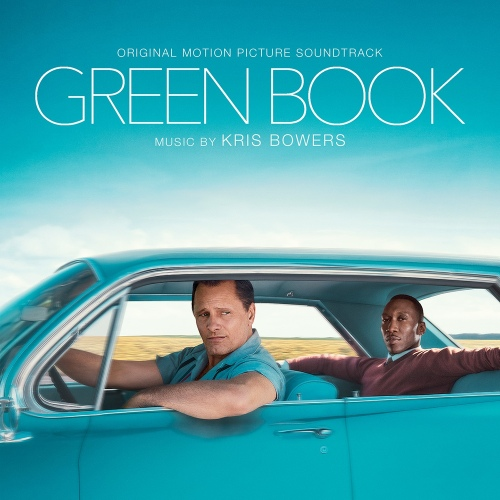
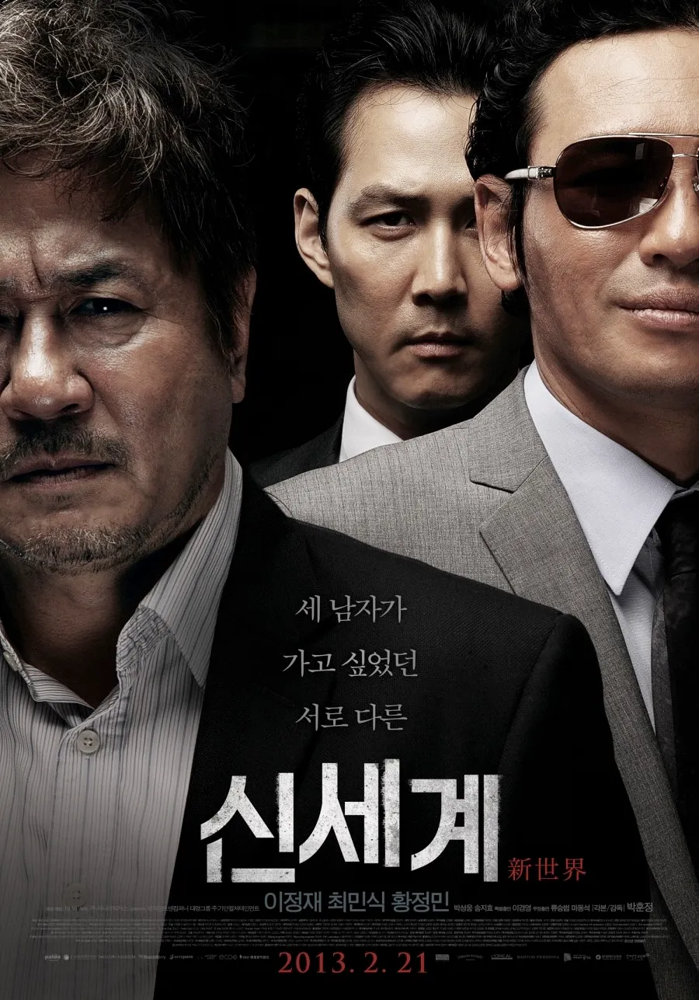
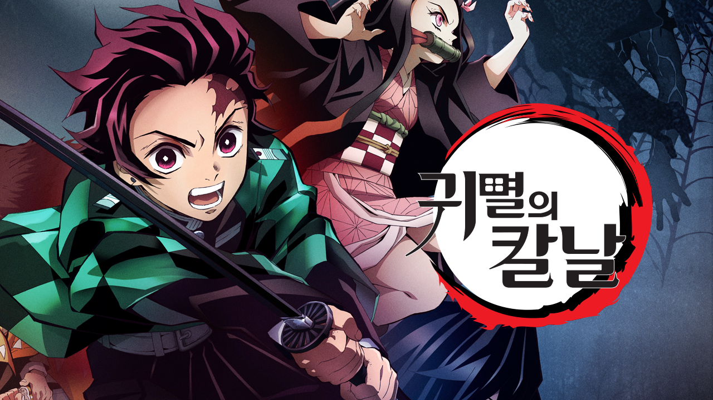
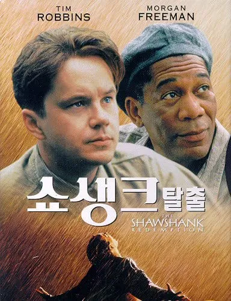
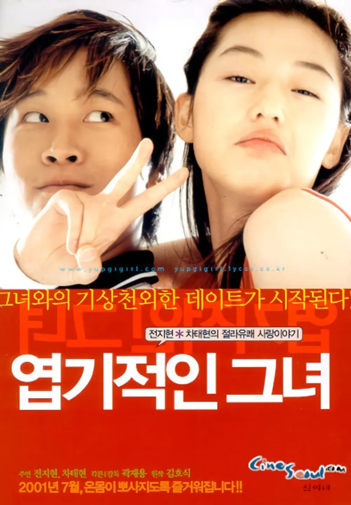
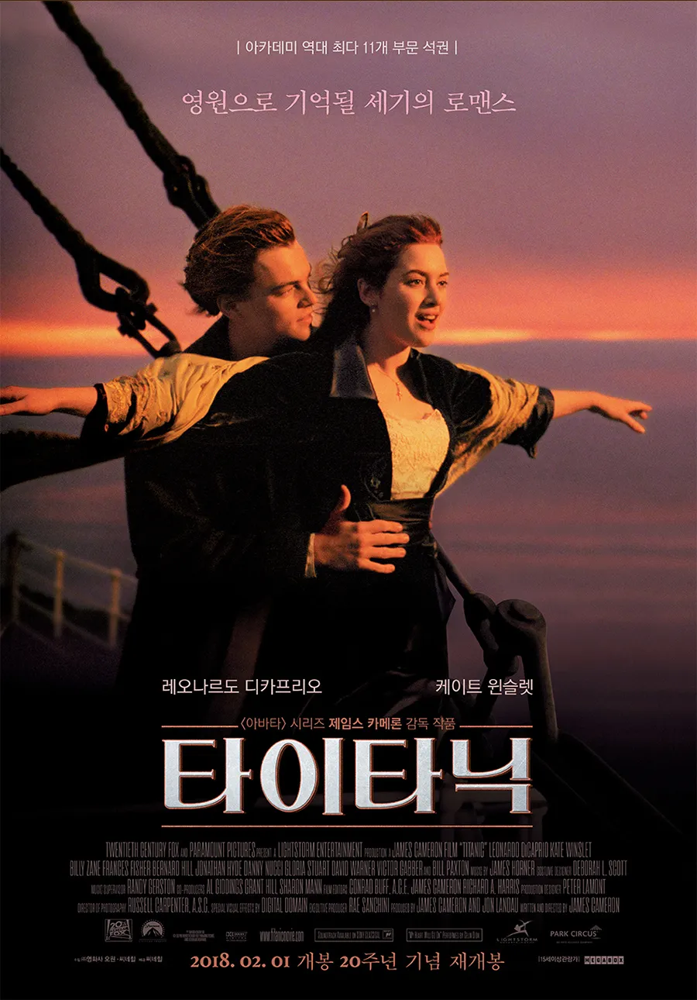
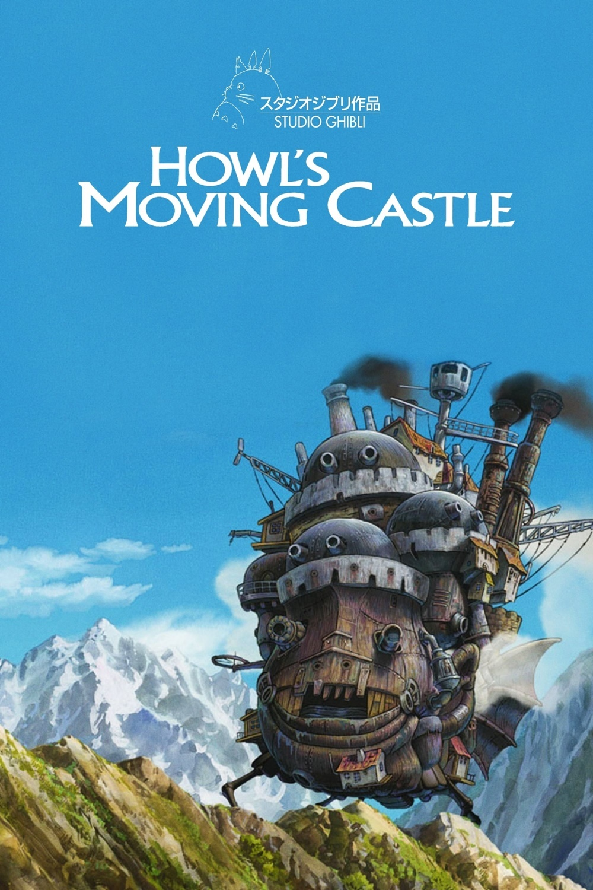

기억에 남는 영화들








안녕하세요 백엔드 7기 윌슨이에요. 닉네임은 영화 캐스트 어웨이에 나오는 작중 캐릭터 이름을 따왔어요. 잘 부탁드려요
주인공(톰 행크스)이 비행기 추락 사고 후 무인도에 4년 동안 표류하게된 내용을 그린 영화이다. 작중에 주인공이 몇 시간 동안 불을 피우다가 결국 실패하자 눈이 돌아서 피묻은 손으로 배구공을 던진다. 근데 던진 배구공에 묻은 자신의 피가 손자국 형태로 남자, 갑자기 그 위에 손가락으로 눈과 코, 입을 그려 얼굴 모양을 만들고 '윌슨'이라고 이름을 붙인다. 이후 이 배구공은 주인공의 유일한 '대화 상대'이자 하나뿐인 베프가 된다.
영화 샌과 치히로의 엔딩곡이다. 멜로디가 심신의 안정을 주기 때문에 공부를 하거나 명상을 할 때 듣기 좋다. 그래서 병원에서 자주들리는 곡이기도 하다.
작가는 큰 변화를 위해 거창한 목표나 계획보다는 작은 실천의 중요성을 강조한다. 또한 자기계발의 본질, 성공과 행복의 관계, 시간 관리의 중요성, 올바른 공부법 등 일상에서 적용할 수 있는 실용적인 조언들을 제시한다. 윌슨이 입시를 준비할 때 큰 힘이 됐던 책이다.